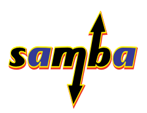
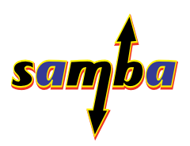

Self-hosted services with a Raspberry Pi
Romain Pellerin
Hackathon UTC 2015-06-13
Raspberry Pi 2 Model B

Specifications
- Micro SD card slot
- 900MHz quad-core ARM Cortex-A7 CPU
- 1GB RAM
- 4 USB ports
- 40 GPIO pins
- Full HDMI port (1080P fully supported)
- Ethernet port 10/100 MB
Specifications
- Combined 3.5mm audio jack and composite video
- VideoCore IV 3D graphics core
- Camera interface (CSI)
- Display interface (DSI)
Raspbian (based on Debian 8)
Why self-hosting?


 
